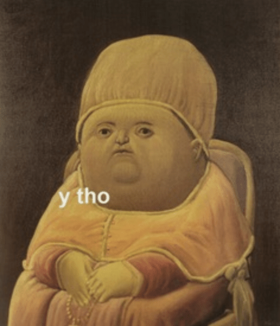

This looks like it was made in 1999 on purpose.
Websites used to be good!
But I think they are all very bad now!
The internet used to feel...personal. We used to make web pages for ourselves, for our friends, or communities we were active in. Today, it feels more like it was designed primarily with the search algorithms in mind.
While that is an entirely valid way to exist online, I don't think it's the only way. And I think a lot of the charm of the early web has been lost to a modern sense of uniformity reinforced by what finds success in search results.
What we want to say and how we want to present to the world is being preemptively modified by what rises to the top of online searches. Perpetual growth and profit maximization have become the defining values of the modern web, and it has erased the equally valid and generally more fun approach of just creating a little page for yourself that brings you or those you care about a little joy.
What brings me joy
I like being able to look at a web page and see the bones of it. All of the relationships each element on the page has to the others was so clearly evident in the early web. That the bones of the page were so clear made it easier to see that there was a person behind its construction. It felt more like a Battlestar Galactica or Firefly situation, and less like Star Trek: The Next Generation. The mechanics of the page were visible, and that made it feel more human. Also, I am DEEPLY enthusiastic about dinky animated GIFs.
This is why on this page, not only are the building blocks identifiable just by looking at them, I've taken the additional steps of highlighting the often invisible aspects of a web page in the side columns (on desktop).
This includes information that go into determining the layout of the page like class names and IDs, but it also goes further to include information about an elements dimensions, its siblings, parents, grandparents and children.
This information exists on every page, but all these relationships are often intentionally invisible to us as the viewer of the page. Relationships and understanding the context that things exist within is something we should all find important -- on and off the web page.
Classic Web With Modern Tools
The internet of 25 years ago had more charm and more personality of today's web, but it was also an accessibility nightmare. A lot of the same iconic features of the retro web can be recreated in ways that are inclusive for all internet users.
Reduced Motion
While I love animated GIFs, I do not experience any vestiublar motion disorders that could be triggered by them. And a website cannot reasonably be described as "fun" or "charming" if a portion of its visitors are made to feel physically ill from it.
Luckily, the good folks establishing CSS standards created the
prefers-reduced-motion
media query for just such an occassion! If a user has set a
preference on their local device, this media query allows me to
respect that and instead show a still image in place of an
animated GIF.
<picture>
<source srcset="images/line.gif" alt="A line" media="(prefers-reduced-motion: no-preference)"/>
<img src="images/stills/line.png" alt="A line" />
</picture>
The Marquee
Just like those delightful animated GIFs, the marquee tag would
have been a wildly unnecessary challenge for someone with a
vestibular motion disorder. But while the marquee tag is no longer
supported, we can recreate the effect with CSS animations all
while using that prefers-reduced-motion feature to
make sure we're not inflicting suffering on people wantonly.
.marquee-container {
overflow: hidden;
white-space: nowrap;
}
.marquee {
animation: marquee 10s linear infinite;
}
@keyframes marquee {
0% { transform: translateX(200%); }
100% { transform: translateX(-200%); }
}
@media (prefers-reduced-motion) {
.marquee { animation: none; }
}
Semantic HTML
The web that I am looking fondly upon today was also a web that
was incredibly hostile to people with visual impairments. Just an
absolute mess of <table> and contextually
meaningless <div> tags. Mercifully today, we
have the alt attribute for images, and we have
semantic HTML elements like header,
footer, nav, and main that
make it easier for people with a range of unique needs to navigate
the web.
What's the point of this?
Primarily for me to have fun. The web is a delightful and magical place! Our websites should reflect our joys.
And an era where websites were just the Dancing Baby GIF from Ally McBeal and you didn't have to worry about whether your visit to the site was facilitating genocide in Myanmar or eroding democracy was simply a more joyous time to be online. And what are we even doing here if we're not enjoying ourselves?